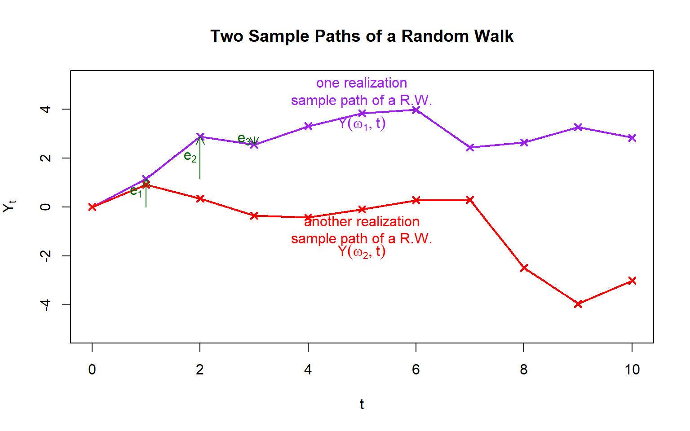

25 Spring 439/639 TSA: Lecture 1
1 Basic definitions
1.1 Observed T.S. vs. Probabilistic Model for T.S.
- We use lower case letters to denote Observed T.S.(Time Series). Example: \(y_0,y_1,y_2,\dots,\) or \(\dots,y_{-2},y_{-1},y_0,y_1,y_2,\dots.\)
- We use capital letters to denote Probabilistic Model for T.S., which is a series/sequence of RVs. Example: \(Y_0,Y_1,Y_2,\dots,\) or \(\dots,Y_{-2},Y_{-1},Y_0,Y_1,Y_2,\dots.\) We may also use the following shorthand notations: \((Y_i), (Y_t), (Y_t)_{t=0}^{+\infty}, (Y_t)_{t=1}^{+\infty}, (Y_t)_{t=-\infty}^{+\infty},\) etc.
1.2 Formal definition of time series
Definition: A time series model for the observed data \((y_t)\) is a specification of the joint distribution, or possibly just the means and covariances, of a sequence of random variables \(\{ Y(\omega,t), t\in T\}\) of which \((y_t)\) is a realization.
We will frequently use the term time series to denote both the model and the observed data.
In this definition, the stochastic process can be seen as a set/sequence of random variables \(Y(\omega,t)\) indexed by time \(t\). The \(T\) is an index set for time \(t\). The randomness comes from \(\omega\), which takes values from the sample space \(\Omega\). For this course TSA, in most cases, we have the following setting:
- The time index set \(T\) is often \(\mathbb{Z}\) (the set of integers) or \(\mathbb{Z}_{\ge 0}\) (nonnegative integers).
- The random variables here are continuous, which means for any fixed \(t\), the random variable \(Y(\omega,t)\) follows a continuous distribution.
2 Some useful functions to characterize a time series
To characterize a time series, we look at the means, variances, autocovariances, autocorrelations of a time series.
2.1 Definitions
- Mean Function: for any \(t\), define \[\mu_t := \mathbb{E}[Y_t].\]
- Autocovariance Function(ACVF): for any two time indices \(t,s\), define the corresponding ACVF as the covariance of \(Y_t\) and \(Y_s\), i.e., \[\gamma_{t,s} := Cov(Y_t, Y_s) = \mathbb{E}[(Y_t-\mu_t)(Y_s-\mu_s)] = \mathbb{E}[Y_t Y_s] -\mu_t\mu_s.\]
- Variance Function is the special case of ACVF with \(t=s\), which is equal to the variance of \(Y_t\), \[\gamma_{t,t} = Cov(Y_t, Y_t) = Var(Y_t).\]
- Autocorrelation Function(ACF): for any two time indices \(t,s\), define the corresponding ACF as the correlation of \(Y_t\) and \(Y_s\), i.e., \[\rho_{t,s} := \frac{Cov(Y_t, Y_s)}{\sqrt{Var(Y_t) \cdot Var(Y_s)}} = \frac{\gamma_{t,s}}{\sqrt{\gamma_{t,t} \cdot \gamma_{s,s}}}.\]
2.2 Properties
- When \(t=s\): \[\gamma_{t,t} = Var(Y_t), \quad \rho_{t,t}=1.\]
- Symmetry: \[\gamma_{t,s} = \gamma_{s,t}, \quad \rho_{t,s} = \rho_{s,t}.\]
- Recall that the Cauchy–Schwarz inequality \(Var(X) \cdot Var(Y) \ge |Cov(X,Y)|^2\) holds for any two random variables \(X,Y\). This immediately gives \[|\gamma_{t,s}| \le \sqrt{\gamma_{t,t} \cdot \gamma_{s,s} }, \quad |\rho_{t,s}| \le 1.\] Some further remarks:
- If \(\rho_{t,s} \approx \pm 1\), then \(Y_t\) and \(Y_s\) are strongly linearly related.
- If \(\rho_{t,s} \approx 0\), then \(Y_t\) and \(Y_s\) are weakly linearly related.
- If \(\rho_{t,s} = 0\), then \(Y_t\) and \(Y_s\) are uncorrelated.
- If \(Y_t\) and \(Y_s\) are independent, then \(Y_t\) and \(Y_s\) are uncorrelated (assuming both have nonzero and finite second moments). This is because independence directly implies \(\gamma_{t,s}=0\), which further implies \(\rho_{t,s} = 0\).
- Bilinearity: For any positive integers \(n,m\), any real numbers \(a_1,\dots,a_n, b_1,\dots,b_m \in \mathbb{R}\), and any time points/indices \(t_1,\dots,t_n,s_1,\dots,s_m\), the following holds \[Cov\left( \sum_{i=1}^n a_i Y_{t_i}, \sum_{j=1}^m b_j Y_{s_j} \right) = \sum_{i=1}^n \sum_{j=1}^m a_i b_j Cov(Y_{t_i}, Y_{s_j}).\] Examples:
- \(Cov(a_1 Y_{t_1} + a_2 Y_{t_2}, Y_s) = a_1 Cov(Y_{t_1}, Y_s) + a_2 Cov(Y_{t_2}, Y_s).\)
- \(Cov(a_1 Y_{t_1} + a_2 Y_{t_2}, b_1 Y_{s_1} + b_2 Y_{s_2}) = a_1 b_1 Cov(Y_{t_1}, Y_{s_1}) + a_2 b_1 Cov(Y_{t_2}, Y_{s_1}) + a_1 b_2 Cov(Y_{t_1}, Y_{s_2}) + a_2 b_2 Cov(Y_{t_2}, Y_{s_2}).\)
3 Examples of time series
3.1 Example 1: Linear Regression
Consider the time series defined by \[Y_t= a+ bt + e_t, \quad e_t \overset{iid}{\sim} N(0,\sigma_e^2).\] Remark: In time series models, such \(e_t\) terms are called innovation terms, error terms, or noise terms. For this example,
- Mean function: \(\mu_t = \mathbb{E}[Y_t] = \mathbb{E}[a+ bt + e_t] = a+ bt.\)
- ACVF:
\[\gamma_{t,s} = Cov(a+ bt + e_t, a+ bs + e_s) = Cov(e_t, e_s) = \begin{cases} 0, &\text{if } t\neq s\\ \sigma_e^2, &\text{if } t=s. \end{cases}\]
- ACF:
\[\rho_{t,s} = \begin{cases} 0, &\text{if } t\neq s\\ 1, &\text{if } t=s. \end{cases}\]
3.2 Example 2: Random Walk
Let \(e_1,e_2,e_3,\dots \sim IID(0,\sigma_e^2)\), which means they are iid random variables with mean \(0\) and variance \(\sigma_e^2\). Define Random Walk as follows: \[ \begin{split} &Y_0 = 0 \\ &Y_1 = e_1 \\ &Y_2 = e_1+e_2 \\ &Y_3 = e_1+e_2+e_3 \\ &\cdots \end{split} \] Remark: Alternatively, it can be defined by \(Y_0=0\) and \(Y_{t+1}= Y_t+ e_{t+1}\). For this example,
- Mean function: \(\mu_t = \mathbb{E}[Y_t] = \mathbb{E}[e_1+\cdots+e_t] = 0.\)
- Variance function: Using the dependence between the \(e_t\) terms, we have
\[\gamma_{t,t} = Var(Y_t) = Var(e_1+\cdots+e_t) = \sum_{i=1}^t Var(e_i) + 2\sum_{1\le i<j\le t} Cov(e_i,e_j) = t \sigma_e^2.\] So this variance function grows linearly with time \(t\).
- ACVF: Suppose \(1\le s\le t\), then we have
\[\begin{split} \gamma_{s,t} &= Cov(Y_s,Y_t) = Cov(Y_s, Y_s+(Y_t-Y_s)) \\ &= Var(Y_s) + Cov(Y_s, e_{s+1}+ e_{s+2}+ \cdots +e_t) = s \sigma_e^2. \end{split}\] where the last step is because \(Y_s\) is independent of the terms \(e_{s+1},\dots,e_t\). If \(1\le t\le s\), we can derive \(\gamma_{s,t} = t \sigma_e^2\) in the same way. So we conclude that \(\gamma_{s,t} = \min\{s,t\} \cdot \sigma_e^2\) for any \(s,t\).
- ACF: Using ACVF, \(\rho_{s,t}= \frac{\gamma_{s,t}}{ \sqrt{\gamma_{s,s}\cdot \gamma_{t,t}}} = \frac{\min\{s,t\} \cdot \sigma_e^2}{\sqrt{s \sigma_e^2} \sqrt{t \sigma_e^2}} = \frac{\min\{s,t\}}{ \sqrt{st}}\). It can also be rewritten as \(\rho_{s,t} = \min\{ \sqrt{\frac{s}{t}}, \sqrt{\frac{t}{s}}\}\). Example: \(\rho_{1,2}= \sqrt{\frac{1}{2}}\), \(\rho_{2,3}= \sqrt{\frac{2}{3}}\). Some further observations: \(\rho_{t,t+1}= \sqrt{\frac{t}{t+1}} \to 1\) as \(t\to\infty\); \(\rho_{1,t}= \sqrt{\frac{1}{t}} \to 0\) as \(t\to\infty\).
3.3 Example 3: “Moving Average”
Let \((e_t) \sim IID(0,\sigma_e^2)\), and define \(Y_t = \frac{1}{2} (e_t + e_{t-1})\). For this example,
- Mean function: \(\mu_t = \mathbb{E}[Y_t] = \frac{1}{2} \mathbb{E}[e_t + e_{t-1}] = 0.\) Note that this mean function does not depend on time \(t\).
- Variance function: \(\gamma_{t,t} = Var(Y_t) = Var(\frac{1}{2} (e_t + e_{t-1})) = \frac{1}{4} (Var(e_t) + Var(e_{t-1}) + 2 Cov(e_t, e_{t-1})) = \frac{1}{2} \sigma_e^2\). Note that this variance function does not depend on time \(t\).
- ACVF: The case \(\gamma_{t,t}\) reduces to the variance function. Next, we compute \(\gamma_{t,t-1}\).
\[\begin{split} \gamma_{t,t-1} &= Cov(Y_t, Y_{t-1}) = Cov(\frac{1}{2} (e_t + e_{t-1}), \frac{1}{2} (e_{t-1} + e_{t-2})) \\ &= \frac{1}{4} (Cov(e_{t}, e_{t-1}) + Cov(e_{t}, e_{t-2}) + Cov(e_{t-1}, e_{t-1}) + Cov(e_{t-1}, e_{t-2})) = \frac{1}{4} \sigma_e^2. \end{split}\]
Exercise: Show that \(\gamma_{t,t-k}=0\) for \(k\ge 2\).
Combining all the cases above, we get
\[\gamma_{t,s} = \begin{cases} \frac{1}{2} \sigma_e^2, &\text{if } t=s \\ \frac{1}{4} \sigma_e^2, &\text{if } |t-s|=1 \\ 0, &\text{if } |t-s|\ge 2. \end{cases}\]
ACF: Using ACVF, we get
\[\rho_{t,s} = \begin{cases} 1 , &\text{if } t=s \\ \frac{1}{2} , &\text{if } |t-s|=1 \\ 0, &\text{if } |t-s|\ge 2. \end{cases}\] Note that in this example, both ACVF and ACF only depend on the lag \(t-s\).
4 Stationarity
The Moving Average example above is an example of Stationary Time Series. “Stationary” roughly means “the probability laws for the time series do not change with time”. (This is not a formal definition, but we can get some fuzzy idea from the example above. In the Moving Average example above, the mean function and the variance function do not depend on time \(t\); the ACVF and ACF also do not depend on \(t\) once the lag \(t-s\) is fixed.)
There are two types of stationarity.
- Strict stationarity (also called strong stationarity);
- Weak stationarity (also called second order stationarity).
Here are the formal definitions of stationarity.
4.1 Strict stationarity
Definition: A stochastic process is strictly stationary if all finite dimensional joint distributions do not change if their indices are shifted by the same amount. (In other words, finite dimensional joint distributions are time invariant.)
This definition is for general stochastic processes. For a time series (suppose the time index set is \(\mathbb{Z}\)), the definition can be stated as follows.
Definition: A time series \((\dots,Y_{-1},Y_0,Y_1,\dots)\) is strictly stationary if for any positive integer \(n\), any distinct integers \(t_1,\dots,t_n \in \mathbb{Z}\), and any integer \(k\in \mathbb{Z}\), the following holds \[F_{Y_{t_1}, \dots, Y_{t_n}} = F_{Y_{t_1 -k}, \dots, Y_{t_n -k}},\] i.e., the joint cdf of \((Y_{t_1}, Y_{t_2}, \dots, Y_{t_n})\) is same as the joint cdf of \((Y_{t_1 -k}, Y_{t_2 -k}, \dots, Y_{t_n -k})\).
Remark: we may also use the notation \(\overset{D}{=}\) or \(\overset{D}{\equiv}\) to denote two random variables/vectors have same (joint) distributions.
By this definition, a strictly stationary time series must satisfy
- \(Y_1 \overset{D}{=} Y_2 \overset{D}{=} Y_3 \overset{D}{=} Y_t\) for any \(t\);
- \((Y_1,Y_3) \overset{D}{=} (Y_2,Y_4) \overset{D}{=} (Y_{10},Y_{12}) \overset{D}{=} (Y_t,Y_{t+2})\) for any \(t\);
- \((Y_1,Y_3,Y_7) \overset{D}{=} (Y_{10},Y_{12},Y_{16}) \overset{D}{=} (Y_{t},Y_{t+2},Y_{t+6})\) for any \(t\);
- \(\dots\)
(Note: the listed properties here are for illustration only. They are just some necessary conditions for a strictly stationary time series.)
Exercise: Show that for a strictly stationary time series, its ACVF \(\gamma_{t,s}\) only depends on the lag \(t-s\). Moreover, by symmetry of ACVF, we can immediately show \(\gamma_{t,s}\) only depends on \(|t-s|\).
Consequently, for a strictly stationary time series, we can replace the notation \(\gamma_{t,s}\) by \(\gamma_{|t-s|}\) to simplify the notation, since this transformation is well defined by the previous exercise.